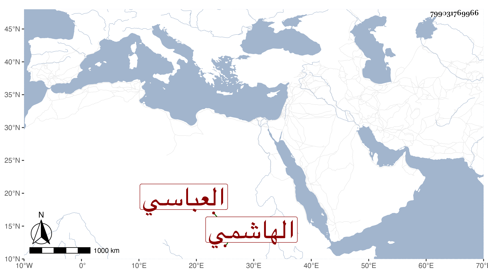

0902Sakhawi.DawLamic.ITO20230111-ara1.EIS1600.799031769966
Biography ID: 799031769966
790
موسى بن محمد بن أبي بكر الشرف بن المتوكل على الله الهاشمي العباسي عم أمير المؤمنين المتوكل العز عبد العزيز ، مات في صفر سنة إحدى وتسعين عن نحو المائة وكان ناقص العقل ترجمته في الوفيات .
